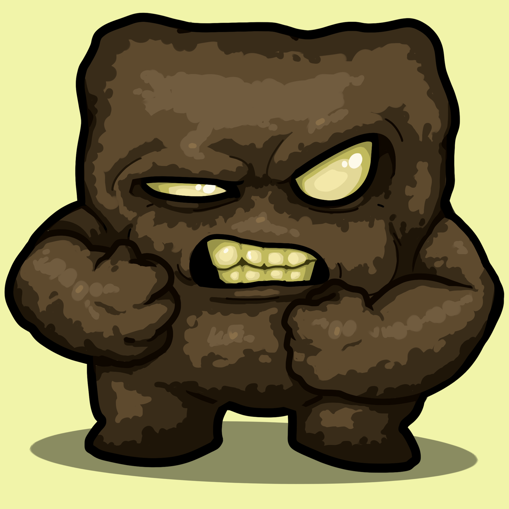

<!DOCTYPE html>
<html>
    <head>
        <meta charset="utf-8" content="width=device-width, initial-scale=1" name="viewport" />
        <title>Index</title>
        <link rel="stylesheet" href="base.css" type="text/css">
    </head>
</html>

<body>
    <div id="header-wrapper">
        <div id="header-left-wrapper">
            
            <h1 id="name" class="header header-left">Brownie99</h1>
        </div>
        <div id="header-center-wrapper">
            <!-- <button class="header-button" type="button">Home</button> 
            <button class="header-button" type="button">Contact</button> -->
        </div>
        <div id="header-right-wrapper">
            <h2 id="contact" class="header header-right">scott.brown2299@gmail.com</h2>
        </div>  
    </div>
    <h1 id="intro-header">Who am I?</h1>
    <p>Hi, I'm Scott Brown, also known as Brownie (or Brownie99 if that's taken) and I'm a guy who enjoys programming and all things computer science. I like to tinker with different technologies, especially those for game development, so here are a few of my projects I've done for fun.</p>
    <br><br><br>
    <h1>OpenGl</h1>
    <p>I've always been curious as to how game engines work under the hood. I decided to teach myself the basics of graphics rendering at the API level to get a better understanding of how a game engine can take coordinates, models and shaders and turn it into a beautiful scene. For this I used the OpenGL library in C++ and the GLFW library for windows window creation and management.</p>
    <br>
    <video class="vid" loop autoplay muted>
        <source src="content/videos/opengl-cropped.mp4" type="video/mp4">
    </video>
    <br><br>
    <p>After follwing tutorials online I finally managed to make a first person camera and scene filled with objects to look at. These are not only lit by multiple lights, but they also have specular maps and highlights depending on the material the light is touching. This is shown on the metal banding around the crates. I have also managed to implement transparancy for a stained window effect.</p>
    <br><br>
    <h1>Discord Bots</h1>
    <p>For a while I was the one to host game servers for my friends. A problem arose when the game servers need starting, restarting or commands needed to be run. The soultion: a bot running in a private server on the communication platform Discord that can be used by my freinds to execute commands to the game server.</p>
    <p>Discord already have a python library for creating bots so using it I created a bot which is able to start the specified game server and then pass commands through to it using steam source remote control (RCON) through the python-valve library.</p>
    <br><br>
    <h1>Current Project: First Person Random Shooter</h1>
    <p>First Person Random Shooter (work in progress title) is a game I am currently developing with my friend using the unity engine. This game is a first person shooter but with a twist random objects are fired from players' guns instead of bullets, hence the name. This game is currently in the early stages of development but at the moment two players are able to connect to a server and shoot and kill each other. The multiplayer server hosting and networking is handled by Photon, a unity multiplayer engine.</p>
</body>